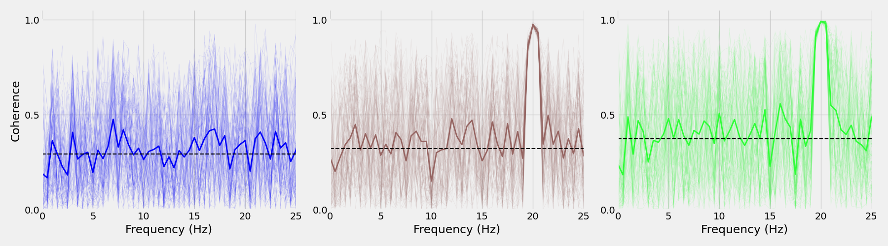
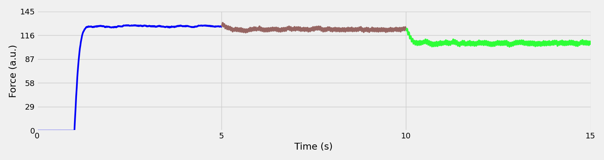
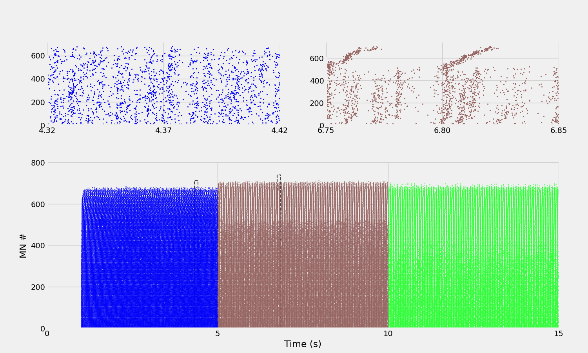

Note
Go to the end to download the full example code.
Generate Publication-Quality Figures and Analysis Plots#
This example generates publication-quality figures for the Watanabe et al. (2013) spinal network model reproduction. It creates comprehensive visualizations including coherence analysis, force timeseries, and detailed raster plots.
Note
Visualization pipeline:
Load simulation parameters and results from previous scripts
Calculate corticomuscular coherence spectra with composite spike trains
Generate force timeseries with phase-coded colors
Create full-duration raster plot with adaptive zoom insets
Save all figures in PDF format for publication
Important
Prerequisites: This example requires outputs from:
00_watanabe_spinal_network_simulation.py: Simulation parameters and results01_load_and_analyze_results.py: NEO-formatted data blocks02_compute_force_from_spinal_network.py: Force model output (watanabe__force_results.pkl)
Key Features:
Coherence analysis: Corticomuscular coherence with 100 random motor unit pairs
Phase-coded coloring: Three distinct colors for constant and modulated drive phases
Adaptive raster plots: Automatic zoom window selection for maximum neuron recruitment
Publication quality: Vector PDF outputs with optimized DPI and rasterization
Use Case: Generate figures for scientific publications, validate model predictions against experimental data, analyze motor unit synchronization patterns.
Import Libraries#
from pathlib import Path
import elephant
import joblib
import matplotlib.gridspec as gridspec
import matplotlib.pyplot as plt
import neo
import numpy as np
import quantities as pq
import seaborn as sns
from joblib import Parallel, delayed
from matplotlib.patches import Rectangle
from scipy import signal as scipy_signal
plt.style.use("fivethirtyeight")
Setup Paths and Load Data#
save_path = Path(r"./results")
save_path.mkdir(exist_ok=True)
# Create watanabe subdirectory for plots
watanabe_plots_dir = save_path / "watanabe"
watanabe_plots_dir.mkdir(exist_ok=True)
# Load simulation parameters from 10a
params_file = save_path / "watanabe__simulation_params.pkl"
if not params_file.exists():
raise FileNotFoundError(
f"Simulation parameters file not found: {params_file}\n"
"Please run 00_watanabe_spinal_network_simulation.py first to generate the simulation data."
)
sim_params = joblib.load(params_file)
dt = sim_params["dt__ms"] # ms - Integration timestep
tstop = sim_params["tstop__ms"] # ms - Total simulation duration
segment_duration__s = sim_params["segment_duration__s"]
print("=" * 70)
print("SIMULATION PARAMETERS")
print("=" * 70)
print(f"Segment duration: {segment_duration__s} s")
print(f"Total duration: {tstop / 1000} s ({tstop} ms)")
print(f"Timestep: {dt} ms")
print()
spinal_results_path = save_path / Path("watanabe_results_neo.pkl")
force_results_path = save_path / "watanabe__force_results.pkl"
# Load spike train results
with open(spinal_results_path, "rb") as f:
results: neo.Block = joblib.load(f)
# Load force results
with open(force_results_path, "rb") as f:
force_block: neo.Block = joblib.load(f)
# Extract data
aMN_results: neo.Segment = results.filter(name="aMN", container=True)[0]
aMN_spikes = aMN_results.spiketrains
force_segment = force_block.segments[0]
force_output = force_segment.analogsignals[0]
======================================================================
SIMULATION PARAMETERS
======================================================================
Segment duration: 5 s
Total duration: 15.0 s (15000.0 ms)
Timestep: 0.025 ms
Define Analysis Parameters#
n_steps = int(tstop / dt)
time = np.linspace(0, tstop, n_steps + 100) # Add margin for NEURON overstep
# Define time windows for analysis (dynamically based on segment duration)
# Skip initial transients - scale with segment duration (max 3s or 20% of segment, whichever is smaller)
transient_skip = min(3, segment_duration__s * 0.2)
phase1_start = transient_skip
phase1_end = segment_duration__s
phase2_start = segment_duration__s + transient_skip
phase2_end = 2 * segment_duration__s
phase3_start = 2 * segment_duration__s + transient_skip
phase3_end = 3 * segment_duration__s
time_windows = [(phase1_start, phase1_end), (phase2_start, phase2_end), (phase3_start, phase3_end)]
window_colors = ["#0001f9", "#966562", "#2efe37"] # Blue, brown, green
# Force plot time windows (continuous segments without transient skip)
force_windows = [
(0, segment_duration__s),
(segment_duration__s, 2 * segment_duration__s),
(2 * segment_duration__s, 3 * segment_duration__s),
]
Corticomuscular Coherence Spectra#
# Create figure with 3 panels
fig_coh, axes_coh = plt.subplots(1, 3, figsize=(18, 5))
# Pre-compute coherences for all windows
all_coherences = []
coherence_freqs = None
for window_idx, (t_start, t_stop) in enumerate(time_windows):
window_color = window_colors[window_idx]
# Filter spike trains for current window
aMN_spikes_windowed = [st.time_slice(t_start * pq.s, t_stop * pq.s) for st in aMN_spikes]
# Convert to binned spike trains
spike_trains_binned = elephant.conversion.BinnedSpikeTrain(
aMN_spikes_windowed,
n_bins=int(
(
aMN_spikes_windowed[0].sampling_rate.rescale("1/s")
* aMN_spikes_windowed[0].duration.rescale("s")
).magnitude
),
).to_sparse_bool_array()
# Generate random pairs (composite spike trains)
np.random.seed(42)
random_indices = np.random.choice(spike_trains_binned.shape[0], size=(100, 5), replace=True)
random_pairs = np.array(
[spike_trains_binned[indices].max(axis=0).todense() for indices in random_indices]
)[:, 0]
# Convolve with square pulse (simulating CST)
sampling_rate = aMN_spikes_windowed[0].sampling_rate.rescale("Hz").magnitude
dt_s = 1.0 / sampling_rate
pulse_duration = 0.05e-3 # 0.05 ms
pulse_samples = int(pulse_duration / dt_s)
square_pulse = np.ones(pulse_samples) * 20000
convolved_signals = []
for pair in random_pairs:
pair_array = np.asarray(pair).flatten()
convolved = np.convolve(pair_array, square_pulse, mode="same")
convolved_signals.append(convolved)
convolved_signals = np.array(convolved_signals)
# Extract membrane potentials
aMN_membrane_potentials = []
for analog_sig in aMN_results.analogsignals:
sig_t_start = analog_sig.t_start.rescale("s").magnitude
sig_t_stop = analog_sig.t_stop.rescale("s").magnitude
if sig_t_start <= t_start and sig_t_stop >= t_stop:
analog_windowed = analog_sig.time_slice(t_start * pq.s, t_stop * pq.s)
aMN_membrane_potentials.append(analog_windowed.magnitude.flatten())
if len(aMN_membrane_potentials) > 0:
# Average and detrend membrane potential
avg_membrane_potential = np.mean(aMN_membrane_potentials, axis=0)
avg_membrane_potential_detrended = scipy_signal.detrend(
avg_membrane_potential, type="linear"
)
# Resample to CST sampling rate
from scipy import interpolate
mp_sampling_rate = aMN_results.analogsignals[0].sampling_rate.rescale("Hz").magnitude
mp_time = np.arange(len(avg_membrane_potential_detrended)) / mp_sampling_rate
cst_time = np.arange(len(convolved_signals[0])) / sampling_rate
interp_func = interpolate.interp1d(
mp_time,
avg_membrane_potential_detrended,
kind="linear",
fill_value="extrapolate",
)
avg_membrane_potential_resampled = interp_func(cst_time)
# Compute coherence for each CST using parallel processing
# Scale nperseg based on segment duration for consistent frequency resolution
# Target: ~0.5 Hz frequency resolution for good 20 Hz analysis
target_freq_resolution = 0.5 # Hz
ideal_nperseg = int(sampling_rate / target_freq_resolution)
# Limit to 80% of signal length to ensure at least 2 overlapping windows
max_nperseg = int(len(convolved_signals[0]) * 0.8)
nperseg_coherence = min(ideal_nperseg, max_nperseg, 300000) # Cap at 300k for memory
# Use 75% overlap for better coherence estimation
noverlap_coherence = int(nperseg_coherence * 0.75)
print(f"\nCoherence calculation parameters for window {t_start}-{t_stop}s:")
print(f" Signal length: {len(convolved_signals[0])} samples")
print(f" nperseg: {nperseg_coherence} samples")
print(f" Frequency resolution: {sampling_rate / nperseg_coherence:.2f} Hz")
def compute_single_coherence(conv_sig):
# Suppress warnings for division by zero in coherence calculation
# This can occur when signals have zero power at certain frequencies
import warnings
with warnings.catch_warnings():
warnings.filterwarnings("ignore", category=RuntimeWarning)
freqs_coh, coh = scipy_signal.coherence(
avg_membrane_potential_resampled,
conv_sig,
fs=sampling_rate,
window="hamming",
nperseg=nperseg_coherence,
noverlap=noverlap_coherence,
detrend="linear",
)
# Replace any NaN or Inf values with 0
coh = np.nan_to_num(coh, nan=0.0, posinf=0.0, neginf=0.0)
return freqs_coh, coh
# Parallel computation across all pairs
results = Parallel(n_jobs=-1, verbose=10)(
delayed(compute_single_coherence)(conv_sig) for conv_sig in convolved_signals
)
coherence_freqs = results[0][0]
coherences = np.array([coh for _, coh in results])
coherences = np.array(coherences)
all_coherences.append((coherences, window_color))
# Plot in corresponding panel
# Plot all 100 individual pairs with alpha
for coh in coherences:
axes_coh[window_idx].plot(
coherence_freqs, coh, color=window_color, alpha=0.1, linewidth=0.5
)
# Plot mean coherence spectrum with solid colored line
mean_coh = np.mean(coherences, axis=0)
axes_coh[window_idx].plot(
coherence_freqs, mean_coh, color=window_color, linewidth=2, alpha=1.0
)
# Plot horizontal line showing overall mean coherence value
overall_mean = np.mean(mean_coh)
axes_coh[window_idx].axhline(
y=overall_mean, color="black", linestyle="--", linewidth=1.5, alpha=1.0
)
axes_coh[window_idx].set_xlabel("Frequency (Hz)")
if window_idx == 0:
axes_coh[window_idx].set_ylabel("Coherence")
axes_coh[window_idx].set_xlim(0, 25)
axes_coh[window_idx].set_xticks([0, 5, 10, 15, 20, 25])
axes_coh[window_idx].set_ylim(0, 1.05)
axes_coh[window_idx].set_yticks([0, 0.5, 1])
sns.despine(ax=axes_coh[window_idx], trim=True)
plt.tight_layout()
plt.savefig(
watanabe_plots_dir / "coherence_spectra_all_windows.pdf",
dpi=300,
bbox_inches="tight",
)
plt.show()

Coherence calculation parameters for window 1.0-5s:
Signal length: 160000 samples
nperseg: 80000 samples
Frequency resolution: 0.50 Hz
[Parallel(n_jobs=-1)]: Using backend LokyBackend with 4 concurrent workers.
[Parallel(n_jobs=-1)]: Done 5 tasks | elapsed: 1.7s
[Parallel(n_jobs=-1)]: Done 10 tasks | elapsed: 2.0s
[Parallel(n_jobs=-1)]: Done 17 tasks | elapsed: 2.3s
[Parallel(n_jobs=-1)]: Done 24 tasks | elapsed: 2.7s
[Parallel(n_jobs=-1)]: Done 33 tasks | elapsed: 3.1s
[Parallel(n_jobs=-1)]: Done 42 tasks | elapsed: 3.6s
[Parallel(n_jobs=-1)]: Done 53 tasks | elapsed: 4.2s
[Parallel(n_jobs=-1)]: Done 64 tasks | elapsed: 4.8s
[Parallel(n_jobs=-1)]: Done 77 tasks | elapsed: 5.4s
[Parallel(n_jobs=-1)]: Done 90 tasks | elapsed: 6.1s
[Parallel(n_jobs=-1)]: Done 100 out of 100 | elapsed: 6.6s finished
Coherence calculation parameters for window 6.0-10s:
Signal length: 160000 samples
nperseg: 80000 samples
Frequency resolution: 0.50 Hz
[Parallel(n_jobs=-1)]: Using backend LokyBackend with 4 concurrent workers.
[Parallel(n_jobs=-1)]: Done 5 tasks | elapsed: 0.5s
[Parallel(n_jobs=-1)]: Done 10 tasks | elapsed: 0.7s
[Parallel(n_jobs=-1)]: Done 17 tasks | elapsed: 1.0s
[Parallel(n_jobs=-1)]: Done 24 tasks | elapsed: 1.3s
[Parallel(n_jobs=-1)]: Done 33 tasks | elapsed: 1.8s
[Parallel(n_jobs=-1)]: Done 42 tasks | elapsed: 2.3s
[Parallel(n_jobs=-1)]: Done 53 tasks | elapsed: 2.8s
[Parallel(n_jobs=-1)]: Done 64 tasks | elapsed: 3.4s
[Parallel(n_jobs=-1)]: Done 77 tasks | elapsed: 4.1s
[Parallel(n_jobs=-1)]: Done 90 tasks | elapsed: 4.8s
[Parallel(n_jobs=-1)]: Done 100 out of 100 | elapsed: 5.2s finished
Coherence calculation parameters for window 11.0-15s:
Signal length: 159999 samples
nperseg: 80000 samples
Frequency resolution: 0.50 Hz
[Parallel(n_jobs=-1)]: Using backend LokyBackend with 4 concurrent workers.
[Parallel(n_jobs=-1)]: Done 5 tasks | elapsed: 0.4s
[Parallel(n_jobs=-1)]: Done 10 tasks | elapsed: 0.6s
[Parallel(n_jobs=-1)]: Done 17 tasks | elapsed: 0.9s
[Parallel(n_jobs=-1)]: Done 24 tasks | elapsed: 1.2s
[Parallel(n_jobs=-1)]: Done 33 tasks | elapsed: 1.6s
[Parallel(n_jobs=-1)]: Done 42 tasks | elapsed: 2.0s
[Parallel(n_jobs=-1)]: Done 53 tasks | elapsed: 2.5s
[Parallel(n_jobs=-1)]: Done 64 tasks | elapsed: 2.9s
[Parallel(n_jobs=-1)]: Done 77 tasks | elapsed: 3.5s
[Parallel(n_jobs=-1)]: Done 90 tasks | elapsed: 4.1s
[Parallel(n_jobs=-1)]: Done 100 out of 100 | elapsed: 4.5s finished
Force Timeseries#
# Extract force signal in original unitless scale
force_signal = force_output.magnitude[:, 0]
time_force = force_output.times.rescale("s").magnitude
sampling_rate_force = force_output.sampling_rate.rescale("Hz").magnitude
# Create figure
fig_force, ax_force = plt.subplots(1, 1, figsize=(15, 4))
# Plot force in continuous segments with different colors (3 phases)
for window_idx, (t_start, t_stop) in enumerate(force_windows):
start_idx = int(t_start * sampling_rate_force)
stop_idx = int(t_stop * sampling_rate_force)
time_segment = time_force[start_idx:stop_idx]
force_segment = force_signal[start_idx:stop_idx]
ax_force.plot(time_segment, force_segment, color=window_colors[window_idx], linewidth=3)
ax_force.set_xlabel("Time (s)")
ax_force.set_ylabel("Force (a.u.)")
ax_force.set_xlim(0, phase3_end)
# Set ticks adaptively based on duration
tick_interval = max(5, int(phase3_end / 10)) # ~10 ticks across the plot
ax_force.set_xticks(np.arange(0, phase3_end + tick_interval, tick_interval))
# Set y-axis limits dynamically based on data
force_max = np.max(force_signal)
force_y_limit = np.ceil(force_max * 1.1) # Add 10% headroom
tick_interval_y = max(1, int(force_y_limit / 5)) # ~5 ticks on y-axis
ax_force.set_ylim(0, force_y_limit)
ax_force.set_yticks(np.arange(0, force_y_limit + tick_interval_y, tick_interval_y))
sns.despine(ax=ax_force, trim=True)
plt.tight_layout()
plt.savefig(watanabe_plots_dir / "watanabe_force_timeseries.pdf", dpi=300, bbox_inches="tight")
plt.show()

Full Duration Raster Plot#
# Sort spike trains by mean firing rate (highest to lowest)
# This puts low firing rate neurons at the TOP of the raster plot
firing_rates = []
for spike_train in aMN_spikes:
duration_s = float(spike_train.t_stop.rescale("s").magnitude)
mean_fr = len(spike_train) / duration_s if duration_s > 0 else 0
firing_rates.append(mean_fr)
# Get sorted indices (highest to lowest firing rate)
# Highest FR → plot_idx=0 → y=0 (bottom), Lowest FR → plot_idx=N-1 → y=N-1 (top)
sorted_indices = np.argsort(firing_rates)[::-1] # Highest first
aMN_spikes_sorted = [aMN_spikes[i] for i in sorted_indices]
# Find optimal zoom window in first phase with highest neuron activity
phase1_search_start = max(transient_skip + 1, 5) # Start after transients, min 5s
phase1_search_end = phase1_end - 1 # Leave 1s margin at end
print(
f"\nSearching for optimal zoom window in first phase ({phase1_search_start:.1f}-{phase1_search_end:.1f}s)..."
)
# Default to ~68% into phase 1 (like original 40.8/60)
best_window_start = phase1_search_start + 0.68 * (phase1_search_end - phase1_search_start)
max_active_neurons = 0
best_max_idx = 0
# Do a comprehensive search every 1 second (or scale with segment duration)
search_interval = max(0.5, segment_duration__s / 60) # Scale search density
for window_start in np.arange(phase1_search_start, phase1_search_end, search_interval):
window_end = window_start + 0.1
active_neuron_indices = []
for plot_idx, spike_train in enumerate(aMN_spikes_sorted):
spike_times = spike_train.times.rescale("s").magnitude
has_spikes = np.any((spike_times >= window_start) & (spike_times < window_end))
if has_spikes:
active_neuron_indices.append(plot_idx)
n_active = len(active_neuron_indices)
max_idx = max(active_neuron_indices) if active_neuron_indices else 0
# Select based on number of active neurons, with max_idx as tiebreaker
if n_active > max_active_neurons or (n_active == max_active_neurons and max_idx > best_max_idx):
max_active_neurons = n_active
best_max_idx = max_idx
best_window_start = window_start
print(
f" * Window {window_start:.1f}-{window_end:.1f}s: {n_active} active neurons, max index: {max_idx}"
)
best_window_end = best_window_start + 0.1
print(
f"\n(OK) Selected window: {best_window_start:.1f}-{best_window_end:.1f}s with {max_active_neurons} active neurons (max index: {best_max_idx})\n"
)
# Create figure with GridSpec layout: zoom insets above, main raster below
fig_raster = plt.figure(figsize=(15, 9))
gs = gridspec.GridSpec(2, 2, figure=fig_raster, height_ratios=[1, 2], hspace=0.3, wspace=0.2)
# Main raster plot (bottom row, spanning both columns)
ax_raster = fig_raster.add_subplot(gs[1, :])
# Plot all motor neuron spikes with colors based on time window (using force windows)
for plot_idx, spike_train in enumerate(aMN_spikes_sorted):
spike_times = spike_train.times.rescale("s").magnitude
# Color spikes based on which time window they fall in
for window_idx, (t_start, t_stop) in enumerate(force_windows):
in_window = (spike_times >= t_start) & (spike_times < t_stop)
if np.any(in_window):
ax_raster.plot(
spike_times[in_window],
np.ones_like(spike_times[in_window]) * plot_idx,
".",
color=window_colors[window_idx],
markersize=1,
alpha=1.0,
rasterized=True, # Rasterize scatter points for smaller PDF
)
ax_raster.set_xlabel("Time (s)")
ax_raster.set_ylabel("MN #")
ax_raster.set_xlim(0, phase3_end)
# Set ticks adaptively based on duration
ax_raster.set_xticks(np.arange(0, phase3_end + tick_interval, tick_interval))
ax_raster.set_ylim(0, 800)
ax_raster.set_yticks(np.arange(0, 801, 200)) # Ticks every 200 from 0 to 800
sns.despine(ax=ax_raster, trim=True)
# Add zoom insets showing detailed spike timing above the main plot
# Second zoom at ~35% into phase 2 (like original 80.8s which was 20.8s into 60s phase 2)
phase2_zoom_start = segment_duration__s + 0.35 * segment_duration__s
phase2_zoom_end = phase2_zoom_start + 0.1
zoom_windows = [(best_window_start, best_window_end), (phase2_zoom_start, phase2_zoom_end)]
for zoom_idx, (t_start_zoom, t_stop_zoom) in enumerate(zoom_windows):
# First pass: Calculate max active neuron index in this zoom window
max_active_neuron_idx = 0
for plot_idx, spike_train in enumerate(aMN_spikes_sorted):
spike_times = spike_train.times.rescale("s").magnitude
has_spikes = np.any((spike_times >= t_start_zoom) & (spike_times < t_stop_zoom))
if has_spikes:
max_active_neuron_idx = plot_idx
# Add padding for visual spacing (5% or at least 20 neurons)
y_padding = max(20, int(max_active_neuron_idx * 0.05))
y_max = max_active_neuron_idx + y_padding
print(
f"Zoom window {t_start_zoom:.1f}-{t_stop_zoom:.1f}s: max active neuron index = {max_active_neuron_idx}, y_max = {y_max}"
)
# Create zoom inset axes from GridSpec (top row)
ax_inset = fig_raster.add_subplot(gs[0, zoom_idx])
# Re-plot spike data for this zoom window
for plot_idx, spike_train in enumerate(aMN_spikes_sorted):
spike_times = spike_train.times.rescale("s").magnitude
# Filter spikes in zoom window
in_zoom = (spike_times >= t_start_zoom) & (spike_times < t_stop_zoom)
if np.any(in_zoom):
# Color based on which force window they fall in
for window_idx, (t_start, t_stop) in enumerate(force_windows):
in_window = (spike_times >= t_start) & (spike_times < t_stop)
in_both = in_zoom & in_window
if np.any(in_both):
ax_inset.plot(
spike_times[in_both],
np.ones_like(spike_times[in_both]) * plot_idx,
".",
color=window_colors[window_idx],
markersize=2.5, # Larger markers for zoom
alpha=1.0,
rasterized=True,
)
# Style the inset with dynamic y-axis limits
ax_inset.set_xlim(t_start_zoom, t_stop_zoom)
ax_inset.set_ylim(0, y_max)
# Calculate appropriate y-ticks based on y_max
if y_max <= 100:
y_tick_step = 25
elif y_max <= 300:
y_tick_step = 50
elif y_max <= 500:
y_tick_step = 100
else:
y_tick_step = 200
ax_inset.set_yticks(np.arange(0, y_max + 1, y_tick_step))
# Set custom x-ticks for insets (midpoint between start and stop)
x_mid = (t_start_zoom + t_stop_zoom) / 2
ax_inset.set_xticks([t_start_zoom, x_mid, t_stop_zoom])
sns.despine(ax=ax_inset, trim=True)
# Draw rectangle on main plot showing zoom region (matching the actual neuron range)
rect = Rectangle(
(t_start_zoom, 0),
t_stop_zoom - t_start_zoom,
y_max,
linewidth=1.5,
edgecolor="black",
facecolor="none",
linestyle="--",
alpha=0.7,
)
ax_raster.add_patch(rect)
plt.tight_layout()
plt.savefig(watanabe_plots_dir / "watanabe_raster_full_duration.pdf", dpi=300, bbox_inches="tight")
plt.show()

Searching for optimal zoom window in first phase (5.0-4.0s)...
(OK) Selected window: 4.3-4.4s with 0 active neurons (max index: 0)
Zoom window 4.3-4.4s: max active neuron index = 680, y_max = 714
Zoom window 6.8-6.8s: max active neuron index = 706, y_max = 741
Total running time of the script: (0 minutes 28.986 seconds)